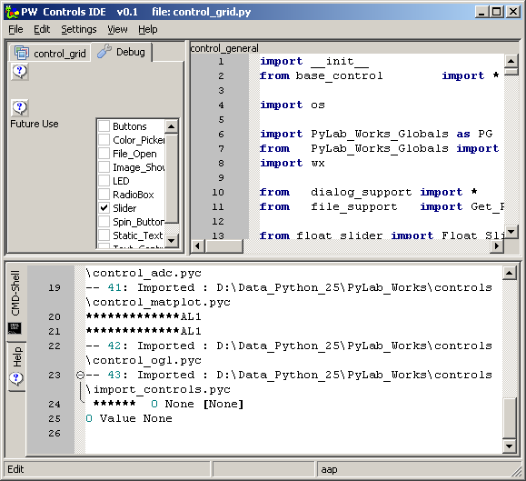
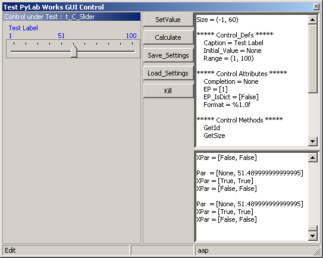
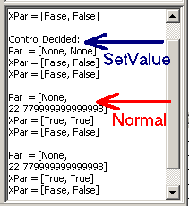

Controls IDE ( april 2009 )
Application Designer / Domain Expert / Control Designer / Core Developer
Introduction
Control = GUI, consisting of 1 or more graphical components, that displays data in some way and / or collects data from the user.
This program is very premature, but nevertheless quite useful.
Instead of making 1 IDE for all tasks, we made a number of specific IDE's, which can be held quit simple, while they are optimized for their specific task. After we've made the different IDE's, we'll make a new decision if we'll combine the different IDE's. For instance, if we want to create / modify a control the following tasks are required:
On the left you see a premature debug tab, and a tab to display another control code file ( in read-only mode ). Changing either the code file for the model or the code file under construction, right click on the tab and select from the popup-menu.
Important keys are
At the moment only the first selected control is used in the preview.
At the bottom we'll find the standaard Shell-Command window with doc-viewer.
The module that contains the control doesn't have to have a main-section (but may have it) and doesn't need to have a test-form (but again may have it). The namespace is cleared before every new run. The namespace is available during and after a control has run in the tester.

Control Preview
The preview is started, by pressing F9 from the code editor. The control is drawn in the left panel and is always drawn in the alternate color (blue), so you can see right away if the function SetForegroundColor works correctly. On the right panel, at the top, the control definitions, attributes with the initial values, and the control methods are listed. On the bottom right the important current values are shown.

|
 |
Each time the control is changed through the normal GUI, the actual parameters are listed, as shown on the left at the red arrow. If the values are changed by the SetValue key, the parameters are listed, preceded by "Control Decided:", as shown at the blue arrow on the left. It's up to the control to decide what he does with SetValue: only change the GUI or change GUI and the corresponding Par value. |
Technical Info
Modules:
- PyLab_Works_Control_Manager.py
- controls_wrapper_dont_touch.py